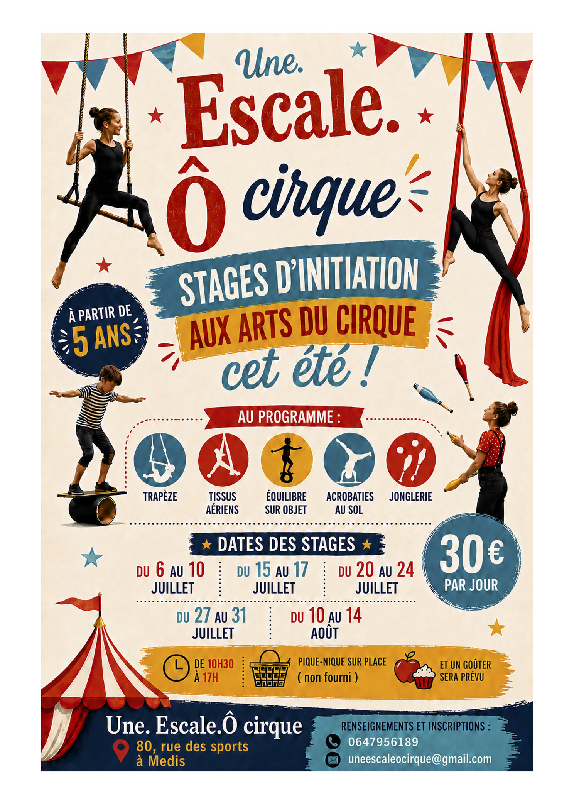

Une Escale Ô Cirque
Cours de cirque et interventions extra-scolaires à partir de 3 ans
Développer la concentration, la maîtrise de soi et la capacité des enfants à s'intégrer harmonieusement dans un groupe.
Au travers des arts du cirque, dans la joie et la créativité, se développent des qualités fondamentales qui conduisent à l'épanouissement et à la structuration de la personnalité.
Les différentes disciplines proposées se pratiquent en toute sécurité et favorisent à la fois l'autonomie et la mesure du risque.
Stage été 2026

Infos pratiques 2025/2026
Horaires
- 3–5 ans — lundi de 17h15 à 18h15
- 6–8 ans — mardi de 17h15 à 18h45, mercredi de 11h à 12h30 ou de 16h30 à 18h
- 9–12 ans — mardi de 18h45 à 20h15 (complet liste d'attente), ou le mercredi de 13h30 à 15h ou de 18h à 19h30
- Ados, Collégiens et Lycéens — mercredi de 15h à 16h30
- Groupe confirmé (les avancés) — lundi de 18h15 à 19h45
- Adultes — lundi de 19h45 à 21h15
Les cours débuteront la semaine du 15 septembre 2025.
Tarifs (adhésion 20 € incluse)
- 1h hebdomadaire — 300 €/an
- 1h30 hebdomadaire — 350 €/an
Nos activités en détail
Acrobatie
Portés acrobatiques, pyramides humaines, acrobatie au sol, ces disciplines proposent un travail individuel et collectif permettant d'aborder les bases de la mobilité du corps. Elles contribuent à développer la tenue, le gainage, la souplesse et la force. Chacun apprend l'importance de prendre conscience de son corps et à maîtriser ses appréhensions.
Équilibre au sol sur les mains et sur la tête
Cette discipline propose une approche par la force et la souplesse, qui mène au plaisir de sentir son corps à l'envers. Contrôle de la respiration et correction de la posture sont au programme !
Jonglerie
Cette activité propose un travail fondé sur différentes approches de la jonglerie et de la manipulation d'objets et permet de développer l'habileté, l'agilité, ainsi que la patience de l'enfant. Balles, foulards, diabolos, massues, on commence avec deux, puis trois et rapidement on enchaîne les différentes figures !
Équilibre sur objets
La boule, le rouleau américain, le fil de fer et les jeux d'équilibre permettent d'aborder les notions d'appuis, de rythmes et de musicalité du mouvement. Les équilibres sur objet favorisent la maîtrise du poids du corps ainsi que la confiance en soi et envers les autres enfants.
L'art clownesque
Cet art permet d'improviser et de travailler sur des mises en scène et des sketchs de clowns célèbres afin de mettre en œuvre leur imaginaire et leur humour. Ouvert à tous ceux et celles qui désirent donner vie à un personnage, en utilisant rire et caricature de notre monde, par une pantomime verbale et gestuelle.
Aériens
Le trapèze et le tissu aérien permettent d'évoluer dans l'espace et de contrôler le sens du vertige. Pratiqué avec ou sans longe de sécurité, il favorise à la fois l'autonomie et la mesure du risque. Porter une attention à chaque mouvement pour obtenir la sécurité et la beauté d'un geste, l'efficacité, l'épure, le regard…
Expression corporelle
Travail plus approfondi sur la mise en scène, la préparation dans les coulisses, la décoration, la musique, les costumes et le maquillage de spectacle. Donner vie à l'objet, s'exprimer à travers le corps et la gestuelle, développer l'imagination et la liberté de création. Intégrer un rapport physique avec l'objet et la scène pour s'investir dans la peau de l'artiste en utilisant les bases de la danse contemporaine et moderne jazz.